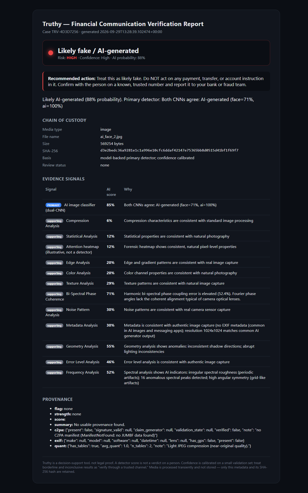
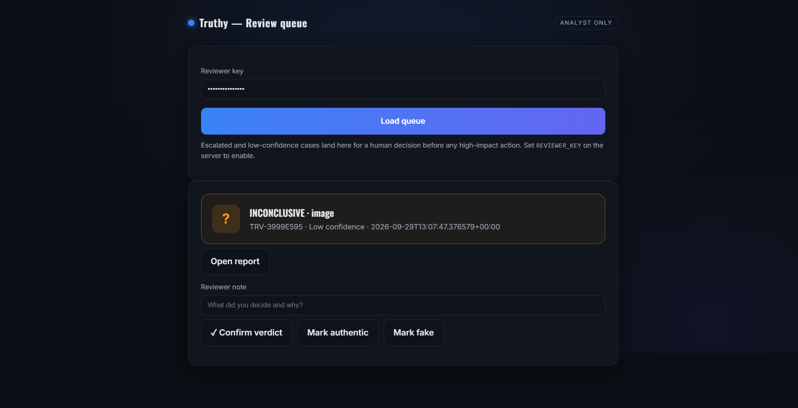

Amazon AI Cyber Security Hackathon · Track 3
Truthy
Verify before you pay.
A multimodal verifier for financial communications: drop in a suspicious voice note,
video clip, or payment screenshot and get a plain-language verdict, the evidence behind it, and a
safe next step — with an auditable case record for review.
Deepfake detection for financial comms
Model-backed + calibrated
Human-in-the-loop
The harm
The most expensive second in Indian digital finance
A person is about to approve a UPI transfer or wire. Then a message arrives that
weaponises trust — and AI has made all three forms cheap to fake.
🎙️ Cloned-voice orders
A WhatsApp voice note in the "boss's" or a
relative's voice: "transfer now, I'll explain later." Seconds of audio clone a voice.
🎬 Deepfake video calls
A "relationship manager" or executive on a
video call authorising a payout — face and voice synthesised.
🖼️ Forged proof
Fake payment-success screenshots, doctored bank SMS,
AI-generated KYC selfies used to unlock a release of funds.
- Primary user: the person/agent at the payment decision — retail UPI user, SME accountant, or bank ops reviewer.
- Bounded moment: pre-payment verification. Not "scan the internet" — one message, one decision, one safe answer.
2
Value
From "panic and pay" to "check, then act"
Today
- Urgent message → pressure → pay first, doubt later.
- No fast way to check a voice note or screenshot.
- A raw "92% fake" score means nothing to a scared user.
- No record, no escalation, no second opinion.
With Truthy
- Drop the file → verdict in seconds.
- Plain verdict + "do not act, confirm on a known number."
- Evidence + provenance you can show your bank.
- Auto-escalation to a human when the model isn't sure.
Differentiation: not a generic "AI detector score" — a decision + evidence + safe action + case record for one high-stakes moment.
3
How detection works
Honesty tiering: the model decides, heuristics only nudge
Primary (model-backed)Dual-CNN image · wav2vec2 voice-clone → calibrated P(AI)
＋
Supporting (heuristic)ELA, FFT, noise, phase, rPPG, lip-sync — bounded ±0.15 nudge
→
Calibrated verdictAI / Human / Inconclusive → escalate
The one rule
A supporting signal can adjust confidence but
can never flip a confident model verdict. This kills the "10 shaky heuristics outvote the real model" failure.
We don't guess
When the primary model isn't confident, the
verdict is Inconclusive and the case routes to human review — no confident-looking wrong answer.
Calibrated, not vibes
Platt scaling maps the model score to a
real probability; uncalibrated output is labelled and capped. Confidence means something.
Replaces the old hand-tuned rule cascade. Primary models: dima806 + Ateeqq (image), wav2vec2-xlsr (voice).
5
Strongest evidence & the record
Provenance + a chain-of-custody case file
- C2PA / Content Credentials verified cryptographically — a signed origin claim beats any pixel heuristic.
- EXIF (piexif) + JPEG quant — camera-capture chain vs AI-software marker vs messaging recompression.
- Precedence rule: verified provenance sets the headline; forgeable EXIF only fills an Inconclusive gap.
- Every check → a case: ID, SHA-256 of the media, verdict, timestamp — media itself never stored.
- Exportable evidence report to forward to a bank/fraud team.

6
Safety, privacy & responsible AI
Built so being wrong can't cause harm
- No auto-blocking / accusations on a single weak signal — Truthy advises, the human acts.
- Human review path for every escalated / low-confidence case, gated by a reviewer key (fails closed).
- Consent + purpose: uploader confirms authorisation; enforced server-side.
- Privacy: media processed transiently and never stored — only metadata + a SHA-256 hash.
- False-positive care: WhatsApp recompression no longer forces "fake"; ambiguity → review.
- Adversarial awareness: heuristics can't drive the verdict, so poisoning them can't flip it; provenance forgery is capped to a nudge.

8
Adoption, integration & scale
A drop-in verification step, three ways to ship
Consumer PWA
Share-sheet target: forward a suspicious voice note/screenshot from WhatsApp → verdict. Zero install.
Bank / wallet SDK
/api/verify called in-app at the "confirm payment" step for flagged flows; verdict + case ID returned.
PSP / ops console
Fraud-ops review queue for escalations, with exportable evidence reports for dispute files.
Operating owner
Bank/PSP fraud-risk team (queue) + platform trust team (thresholds, calibration refresh).
Rollout
1) internal ops assist → 2) high-risk flows in-app → 3) consumer share-sheet.
Latency / cost
Image ~2–8s CPU; single-worker to avoid model duplication; HF Inference API keeps audio model out of RAM; scale by replicas.
9
Feasibility · 48-hour finale
A narrow, demonstrable MVP — most of it already runs
Already working (this submission)
- Unified verify UI for image / voice / video.
- Calibrated dual-CNN image + wav2vec2 voice-clone.
- C2PA + EXIF provenance; case ledger; evidence report; review queue.
48h build targets
- Live demo: cloned-voice UPI note + forged screenshot + deepfake clip.
- WhatsApp share-sheet PWA front-end.
- Expand + re-fit calibration per attack type; publish ROC.
- Reviewer analytics + webhook alert to a mock bank ops channel.
What we'll prove in 48h: end-to-end "suspicious message → verdict → evidence → escalation" on all three modalities, with honest calibrated confidence.
Architecture · 1 of 3
End-to-end system
① Ingest — POST /api/verifyVoice note · video clip · image/screenshot · consent required · SHA-256 hashed at entry · temp file, deleted after
▼
Voice pipelinelibrosa 16k → Silero VAD → wav2vec2-xlsr voice-clone (primary)
Image pipelinedual-CNN (primary) + 11 DSP forensics + attention heatmap (supporting)
Video pipelineframes → rPPG + lip-sync (supporting) · audio → wav2vec2 (primary)
▼
② Tiered fusion + calibrationCalibrated primary drives verdict · supporting ±0.15 nudge only · Platt scaling → P(AI) · uncertain → Inconclusive+escalate
③ ProvenanceC2PA verify + EXIF (piexif) + JPEG quant · verified provenance outranks pixels
▼
④ Decision envelopeVerdict (AI / Human / Inconclusive) · risk (high/med/low) · calibrated confidence · plain-language recommendation · signals · provenance
▼
⑤ Case ledger (SQLite)case ID · SHA-256 · verdict · review status — media never stored
Evidence reportprintable HTML → PDF · chain of custody
Human reviewescalation queue · reviewer key · confirm/override
Architecture 1/3